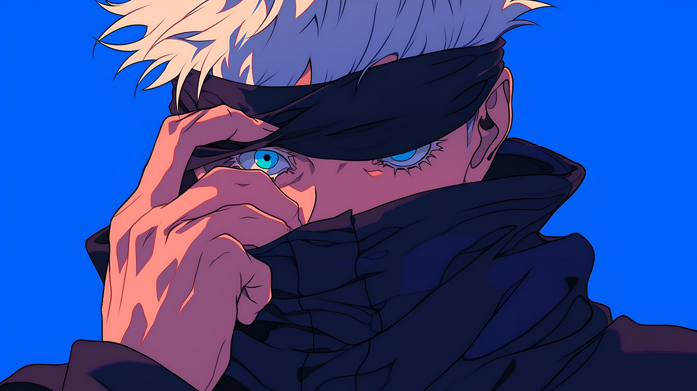
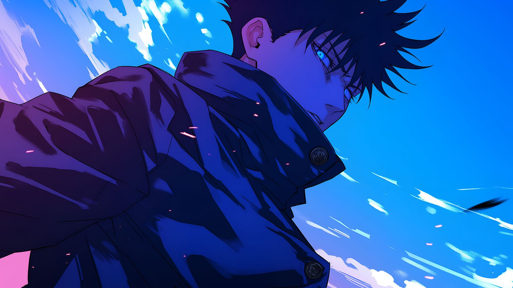
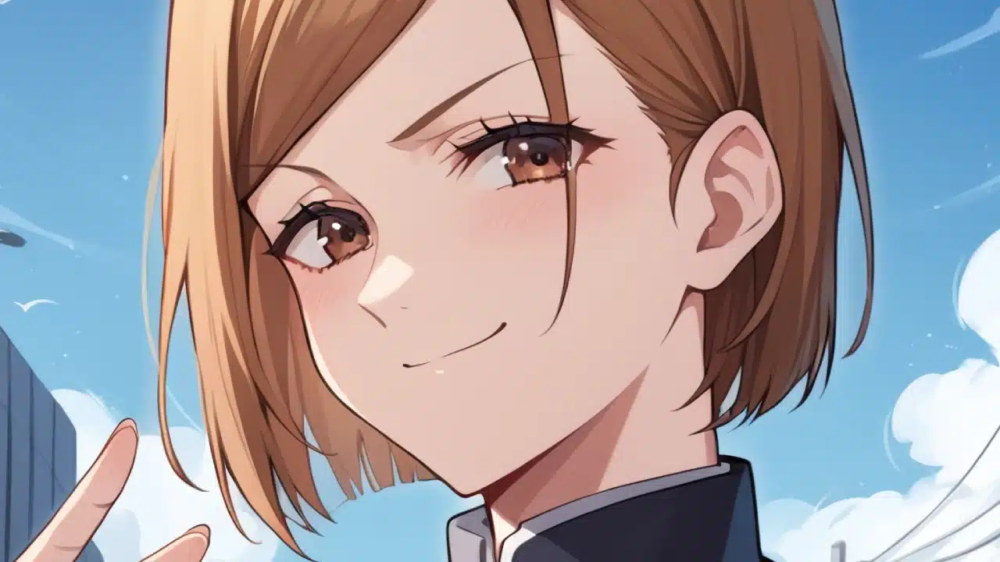
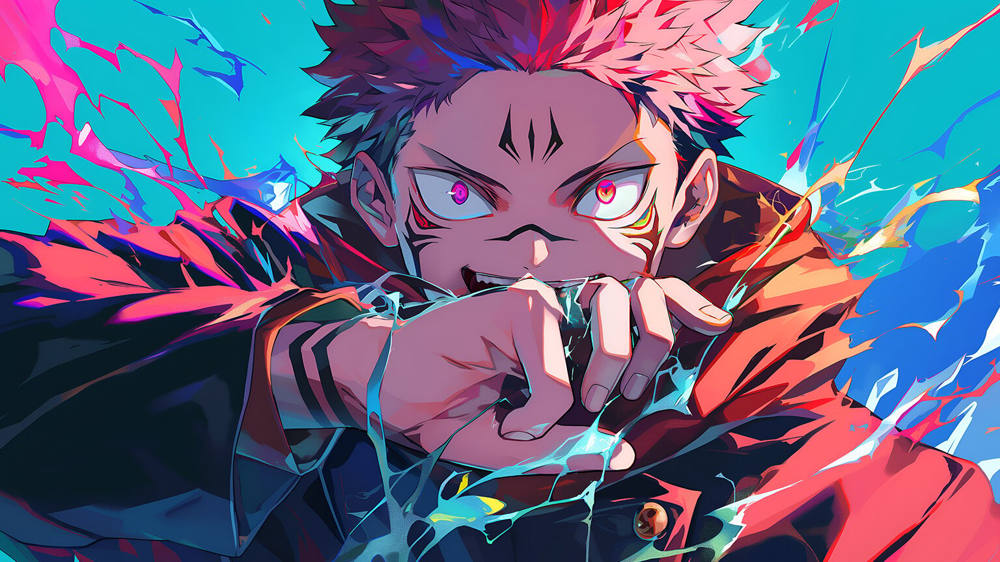
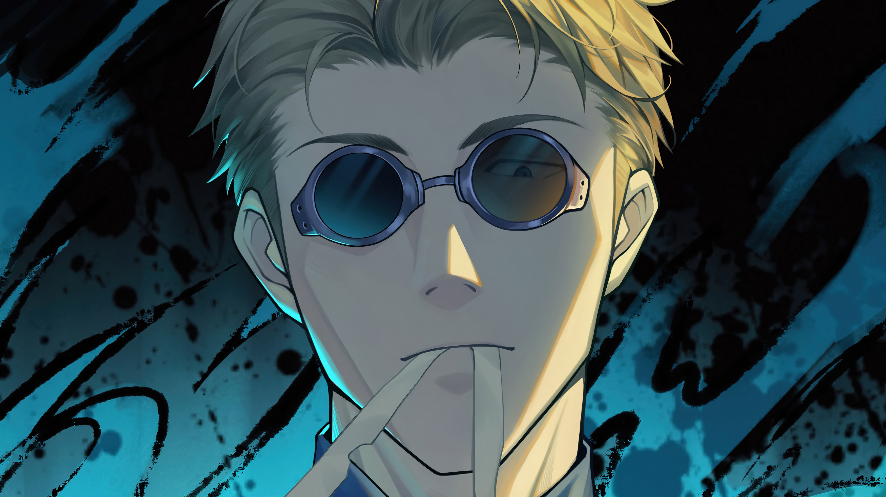
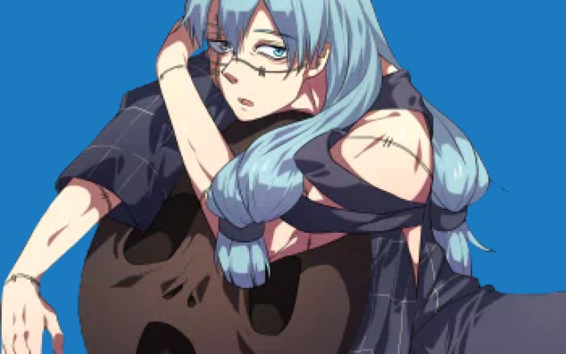

Personajes Principales
Yuji Itadori
El protagonista de Jujutsu Kaisen, con una fuerza física increíble y un corazón noble. Es un estudiante de la escuela de hechiceria de toky y portador de Sukuna
Satoru Gojo
El hechicero más poderoso, conocido por su carisma y su habilidad ilimitada. Es maestro en la escuela de hechiceros y entrena a Itadori.
Megumi Fushiguro
Un talentoso hechicero con un estilo reservado y un fuerte sentido de la justicia. Es algo introvertido y tiene un pasado complejo.
Nobara Kugisaki
Una poderosa hechicera que combina fuerza, ingenio y estilo en batalla. Es una estudiante que viene del interior de Japon y quiere conocer Tokio mientras estudia y caza maldiciones.
Sukuna
Es un espíritu maldito de grado especial y conocido como el Rey de las Maldiciones es el villano principal que toma el cuerpo de Itadori. su objetivo es poder recuperar su forma y poder original encontrandos sus dedos esparcidos por Japon
Kento Nanami
Fue un chamán de primer grado y antiguo estudiante de la escuela de hechiceros y es el mentor de Itadori
Mahito
Es una maldición de grado especial y junto a Sukuna es de los primcipales antagonista de la primera temporada, nacida del odio de los humanos hacia otros humanos. Su objetivo final es la erradicación de la humanidad y, en última instancia, reemplazar la población con espíritus malditos.